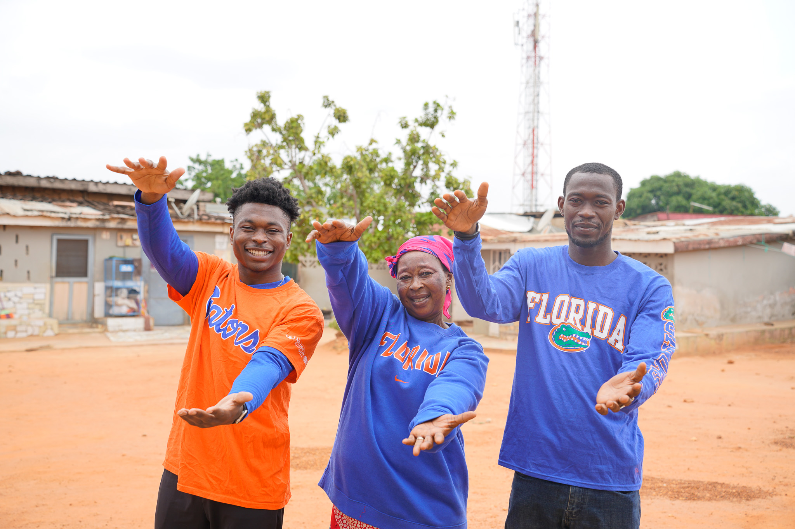
Ghana to UF
Family doing the Gator chomp back home.
Life
I want the site to show the person behind the work: from Ghana, a runner, salsa dancer, soccer player, occasional singer and guitar player, and someone who shares parts of the journey online.

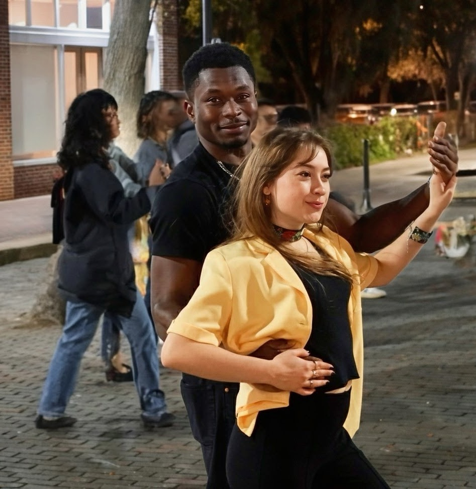
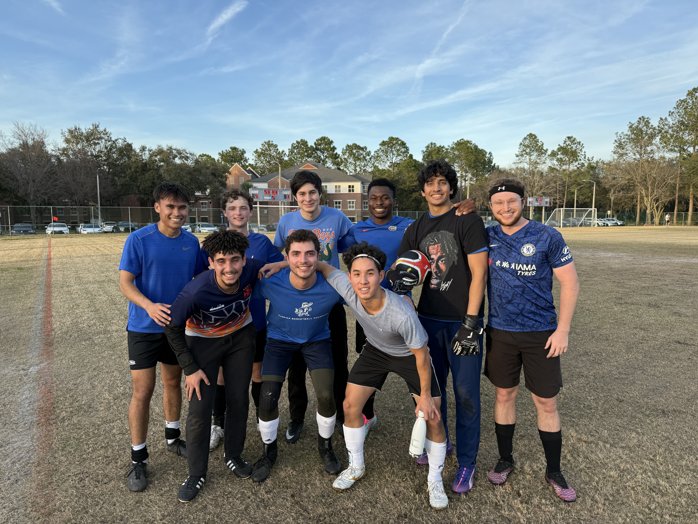
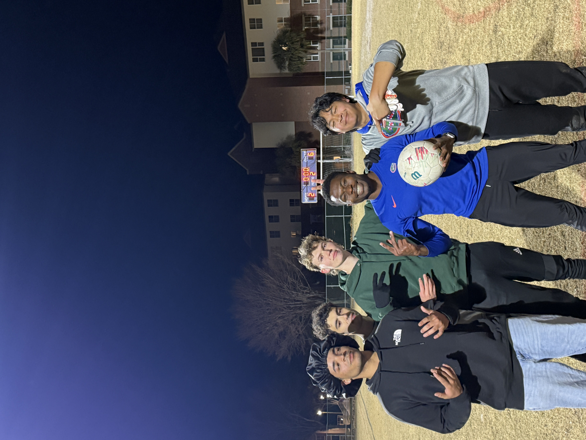
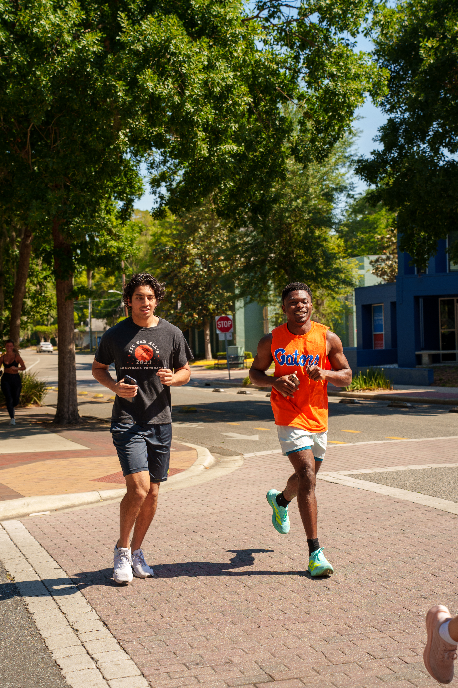
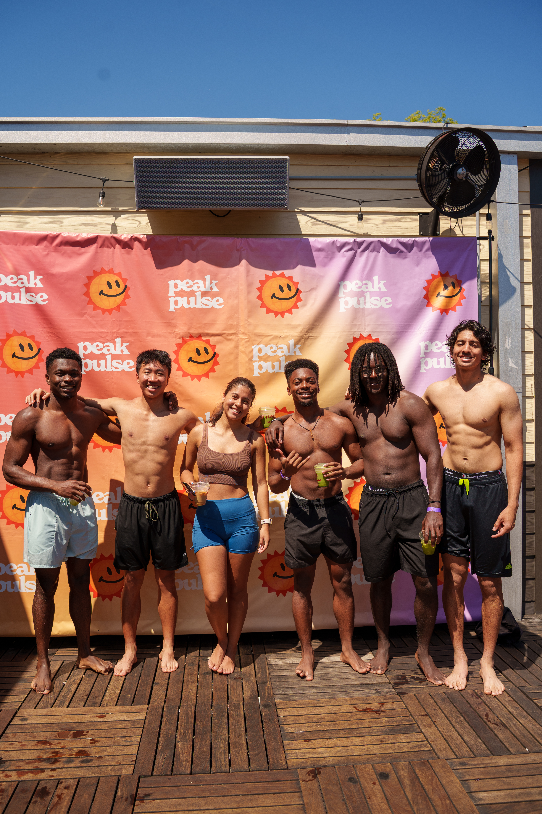
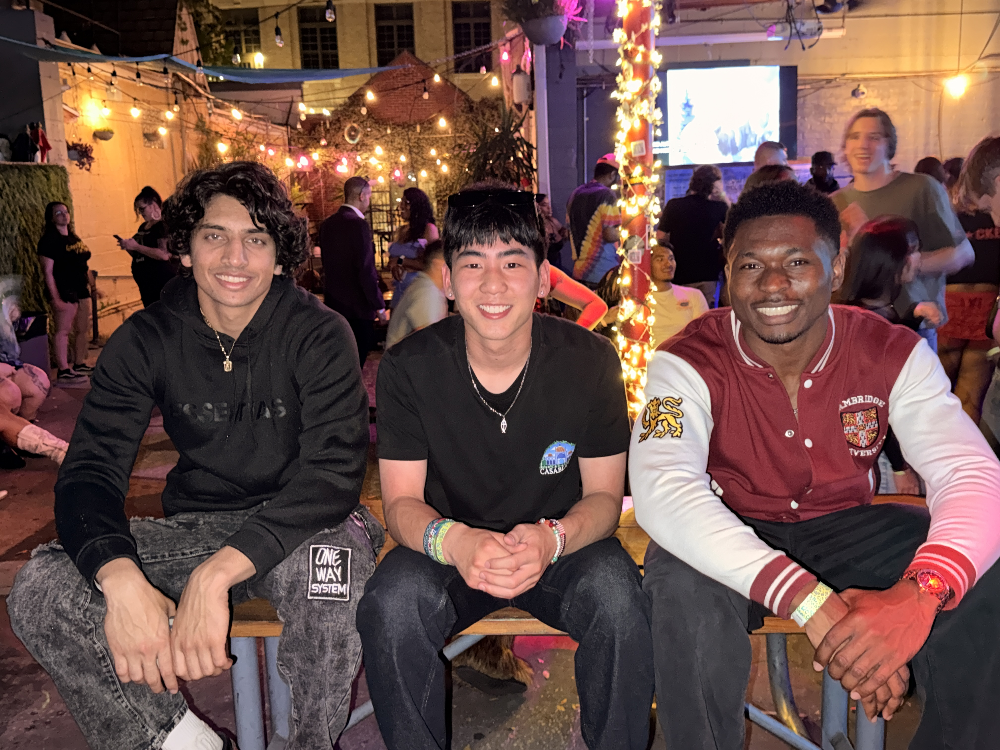
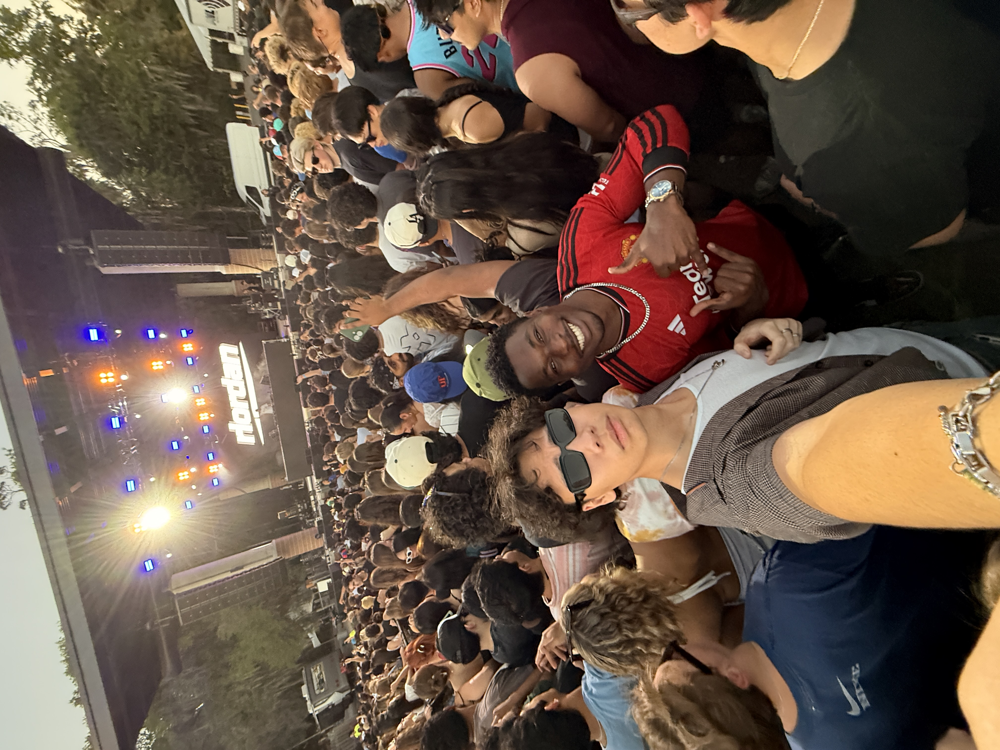
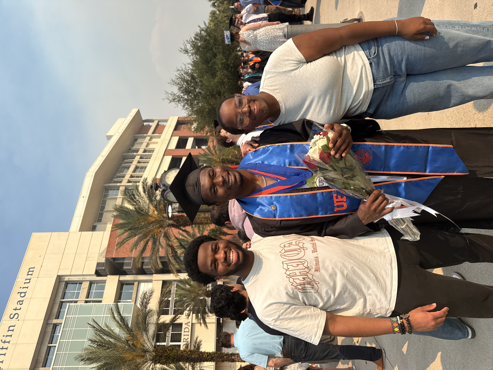
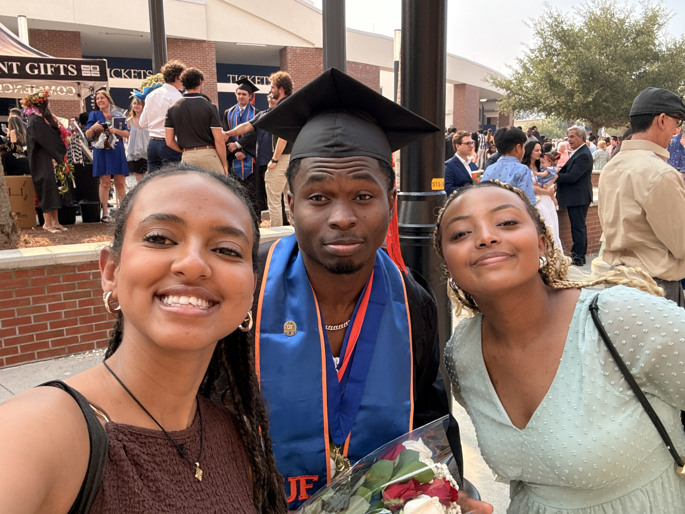
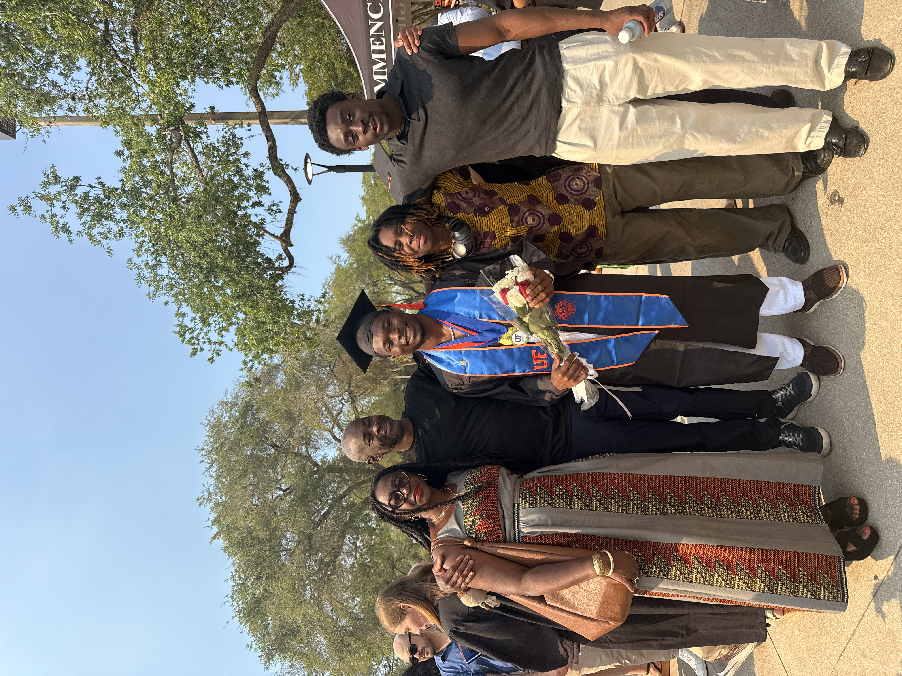
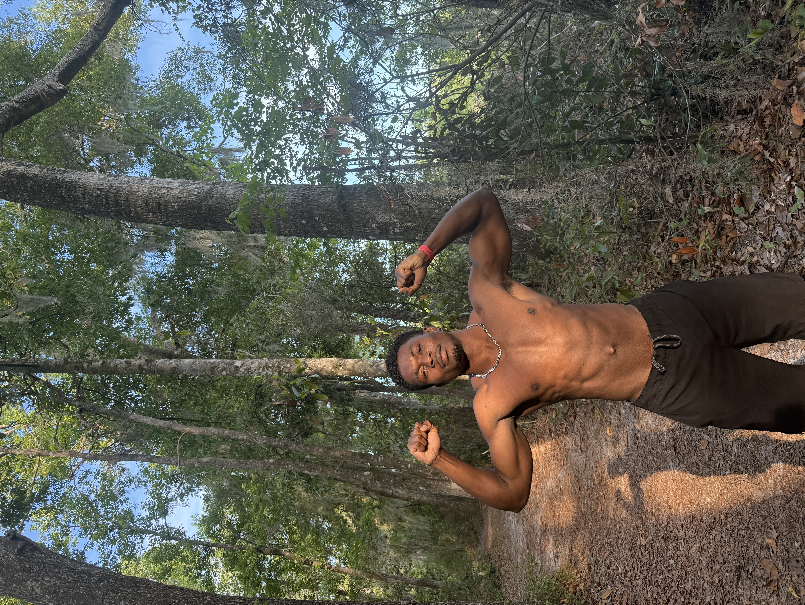
YouTube
I make occasional videos about school, growth, and the strange, rewarding path from Ghana to research in the United States.
Embedded from my channel, with the full channel linked below.
A quick glimpse of the running side of life.